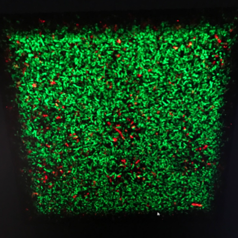

Large-scale testing is one of the top strategies to prevent the spread of COVID-19; however, its application is limited by the cost and processing time of the standard Polymerase Chain Reaction (PCR) tests. New rapid saliva-based tests promise to overcome those limitations. We collaborated with the group of Prof. Peter Preiser (SBS, NTU), who work on such a rapid test, which can give results on-site in 5 minutes or less. Our contribution lay in the development of an easy-to-use reader to evluate changes in colour of the test strips and, by using artificial intelligence, to provide the answers whether the tested subject was COVID-19 positive or not.
Team: Peter TÖRÖK, Josep RELAT GOBERNA, Sean KRUPP
We aim to time-resolve how multi-species bacteria communities
colonize wet surfaces with single-cell resolution. During early-stage
biofilm formation, we use continuous live-cell imaging to capture every
cell event as they land, spin-walk-swim, divide, leave or explore around
the surface as they meet other same-species or different-species cells,
all the while leaving extracellular materials and signals along their
trails. With full spatial-and-temporal causal understanding behind how
biofilms develop, there is a transformative potential to untangle the
myraid complex correlations observed in microbiology and genomics
studies. We hope to tap this to study how bacteria infections
fundamentally develop. We collaborate with Professor Gerard Wong at UCLA
Bioengineering, whose team pioneered the field of quantitative bacteria
tracking for single species. Our main challenge is to apply this rigor
to multi-species communities where bacteria species may look identical
but behave differently together as they coexist or fight against each
other, giving rise to unexpected emergent patterns at very different
timescales. The bacteria species have to be genetically engineered to
express different fluorescent reporters. Continuous flowcell
environments are inoculated with bacteria and continuously imaged under
bright-field with high-temporal frequency and intermittent fluorescent
imaging, and we develop deep learning techniques to help us tackle the
huge terabyte datasets of detailed bacteria cell activity on the
surface.
Team: LAI Ghee Hwee
Collaborators: Gerard
Wong (UCLA)